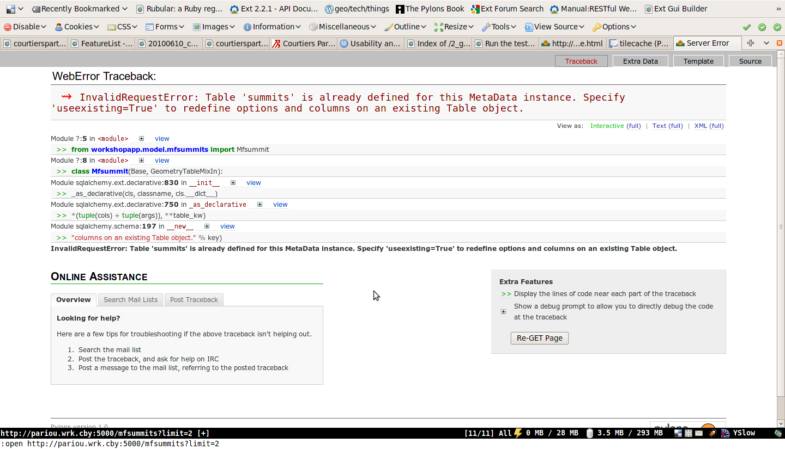

MapFish is a flexible and complete framework for building rich web-mapping applications. It emphasizes high productivity, and high-quality development.
MapFish combines the power of Pylons, SQLAlchemy, GeoAlchemy, Shapely, and geojson.
In this module you will learn about what the MapFish framework provides, and how it simplifies the development of web services for querying and editing geographic features.
To install MapFish in the virtual Python environment use:
(vp) $ easy_install "MapFish==2.0"
You should now have MapFish installed. You can check that using this command:
(vp) $ paster create --list-templates
This command should output this:
Available templates:
basic_package: A basic setuptools-enabled package
mapfish: MapFish application template
paste_deploy: A web application deployed through paste.deploy
pylons: Pylons application template
pylons_minimal: Pylons minimal application template
Note the mapfish line.
In this section you’re going to convert your application from a Pylons application into a MapFish application. A MapFish application is a Pylons application with extra, MapFish-specific, features.
Edit setup.py and add MapFish to the list of paster plugins:
paster_plugins=['MapFish', 'PasteScript', 'Pylons'],
Now execute:
(vp) $ python setup.py egg_info
This registers MapFish as a paster plugin, which will allow you to use MapFish-specific commands for the development of the application. You will learn more about that later in this module.
You can check that your application is now a MapFish application by typing:
(vp) $ paster
And verify that the output of the command includes the following block:
mapfish:
mf-controller Create a MapFish controller and accompanying functional test
mf-layer Create a MapFish layer (controller + model).
mf-model Create a MapFish model
mf-controller, mf-layer, and mf-model are commands provided by the MapFish framework.
In this section you’re going to create a MapFish web service that relies on the summits table. You will thereby understand what MapFish actually brings to the developer.
Create the file layers.ini at the root of your application, with this content:
[mfsummits]
singular=mfsummit
plural=mfsummits
table=summits
epsg=4326
geomcolumn=geom
geomtype=Point
and execute this command:
(vp) $ paster mf-layer mfsummits
Creating /home/python/python_workshop/WorkshopApp/workshopapp/controllers/mfsummits.py
Creating /home/python/python_workshop/WorkshopApp/workshopapp/tests/functional/test_mfsummits.py
To create the appropriate RESTful mapping, add a map statement to your
config/routing.py file in the CUSTOM ROUTES section like this:
map.resource("mfsummit", "mfsummits")
Creating /home/python/python_workshop/WorkshopApp/workshopapp/model/mfsummits.py
As indicated in the command ouput edit the workshopapp/config/routing.py file and add an appropriate route by inserting map.resource("mfsummit", "mfsummits"). Insert this route before the default routes, for example right after the tilecache route.
You can now verify that your MapFish web service functions properly. For example open http://localhost:5000/mfsummits?limit=2 in FireFox. But in fact, because a model class already exists for the table summits, SQLAlchemy will produce an error:
To correct the error edit workshopapp/model/mfsummits.py and add useexisting: True in the table arguments (__table_args__):
from sqlalchemy import Column, types
from geoalchemy import GeometryColumn, Point
from mapfish.sqlalchemygeom import GeometryTableMixIn
from workshopapp.model.meta import Session, Base
class Mfsummit(Base, GeometryTableMixIn):
__tablename__ = 'summits'
__table_args__ = {
"autoload": True,
"autoload_with": Session.bind,
"useexisting": True
}
geom = GeometryColumn(Point(srid=4326))
Open http://localhost:5000/mfsummits?limit=2 again in the browser.
MapFish implements HTTP interfaces for querying and editing features. Any MapFish web service, i.e. any web service created with the paster mf-layer command implements these interfaces. These interfaces are documented in http://trac.mapfish.org/trac/mapfish/wiki/MapFishProtocol.
Here are examples of queries that you can try in the browser:
The above queries use the HTTP GET method.
To create new features the HTTP POST method is used. As an example you can enter the following curl command in your terminal:
curl http://localhost:5000/mfsummits -X POST -H 'Content-Type:"application/json"' \
-d '{"type": "FeatureCollection",
"features": [{"type": "Feature", "geometry": {"type": "Point", "coordinates": [5.8, 45.3]}}]}'
The command should output something like this:
{"type": "FeatureCollection",
"features": [{"geometry": {"type": "Point",
"coordinates": [5.7999999999999998, 45.299999999999997]},
"id": 5081, "type": "Feature",
"bbox": [5.7999999999999998, 45.299999999999997,
5.7999999999999998, 45.299999999999997],
"properties": {"elevation": null, "name": null}}]}
Note that GeoJSON response include the identifiers of the created features. In this example, one feature was created, its id is 5081.
Now open http://localhost:5000/mfsummits/<id> in the browser to get a GeoJSON representation of the freshly created feature, and verify that it has indeed been inserted in the database. <id> is to be replaced with the actual feature identifier (5081 in this example).
To update a feature the HTTP PUT method is used. As an example use this curl command:
curl http://localhost:5000/mfsummits/<id> -X PUT -H 'Content-Type:"application/json"' \
-d '{"type": "Feature", "geometry": {"type": "Point", "coordinates": [6.0, 46]},
"properties": {"name": "foo", "elevation": 1000}}'
Again replace <id> by the actual feature identifier (5081 in the above example).
The command should output something like this:
{"geometry": {"type": "Point", "coordinates": [6.0, 46.0]}, "id": 5081, "type": "Feature",
"bbox": [6.0, 46.0, 6.0, 46.0], "properties": {"elevation": 1000, "name": "foo"}}
Again you can open http://localhost:5000/mfsummits/<id> in the browser to verify that the feature has been updated as expected.
To delete a feature the HTTP DELETE method is used. For example to delete with the curl command the feature whose id is 5081:
curl http://localhost:5000/mfsummits/<id> -X DELETE
If you open http://localhost:5000/mfsummits/<id> in the browser you should now get a 404 error.